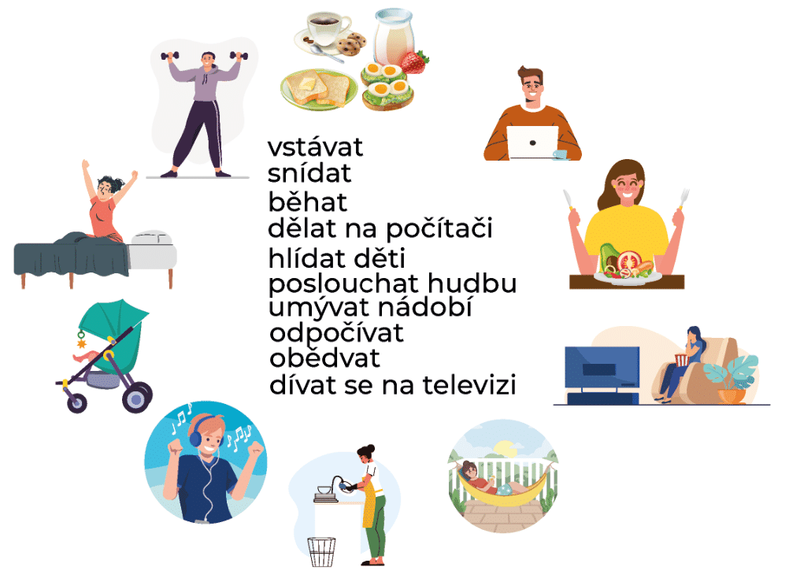
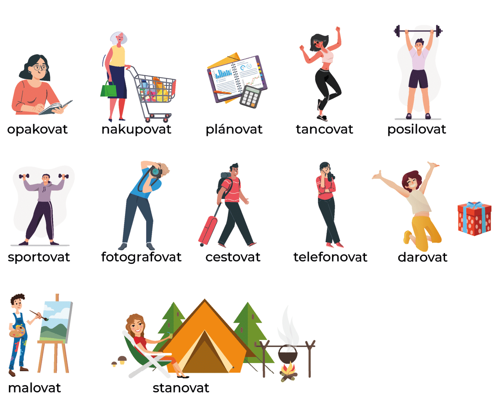

5. Časování sloves
Verb conjugation
VERB CONJUGATION
In the last lesson we already covered pronouns, how they are read and pronounced. Let me repeat briefly:

×

Let's watch the video first!
The first group of verbs: ending in the infinitive with - AT
dělat - delat - to do
čekat - checat - to wait
hledat - ghledat - to search
já - dělám, čekám, hledám
ty - děláš, čekáš, hledáš
on/ona/ono - dělá, čeká, hledá
my - děláme, čekáme, hledáme
vy - děláte, čekáte, hledáte
!!oni - dělají, čekají, hledají
The second group of verbs: ending in the infinitive with -IT, - ET, - ĚT
mluvit - mluvit - to speak
chodit - khodit - to walk
slyšet - slishet - to hear
myslet - mislet - to think
večeřet - vecherzhet - to have dinner
umět - umnet - to be able to
vidět - vidyet - to see
já - ending ím - myslím, mluvím, umím
ty - ending íš - chodíš, slyšíš, vidíš
on/ona/ono - ending í - mluví, myslí, umí
my - ending íme - chodíme, večeříme, vidíme
vy - ending íte - mluvíte, myslíte, umíte
oni - ending í - mluví, myslí, umí
The third group of verbs: ending in the infinitive with -OVAT
pracovat - pratsovat - to work
studovat - studovat - to study
děkovat - dekovat - to thank
vysvětlovat - visvietlovat - explain
I — ending uj+u/i — pracuju/i, studuju/i, děkuju/i, vysvětluju/i
you — ending uj+eš — pracuješ, studuješ, děkuješ, vysvětluješ
he/she/it — ending uj+e — pracuje, studuje, děkuje, vysvětluje
we — ending uj+eme — pracujeme, studujeme, děkujeme, vysvětlujeme
you — ending uj+ete — pracujete, studujete, děkujete, vysvětlujete
they — ending uj+ ou/í - pracujou/í, studujou/í, děkujou/í, vysvětlujou/í
děkujI - a more formal type
pracujÍ - a more formal type of
USEFUL PHRASES
V kolik hodin vstáváte? Vstávám v...
Oblékat se - oblecat se - to dress
Odpočívat - odpochiivat - to rest
Sprchovat se - sprkhovat se - to take a shower
Bydlet - bidlet - to live
Říсt - rzhiitst - say
Jídelna - yeedelna - dining room
Obědvat - obyedvat - to have lunch
Potřebovat - potrzhebovat - to need
Tužka - tuzhka - pencil (pen, marker)
Používat - pouzheevat - to use
Vařit - varzhit - to cook
Zeptat se - zeptat se - to ask
Bohužel - boghuzhel - unfortunately
Škoda - shkoda - a pity
Mrzí mě to - Mrzii mnye to - I'm sorry
Je mi líto - ye mi leeto - I sympathize, it’s a pity
Practice the verbs conjuctions
1.1. Read the text, translate unfamiliar words.
Je sedm hodin ráno
Jak začíná můj den? Začíná brzo — vstávám už v sedm hodin, protože nerad pospíchám. Myju se, oblékám se, potom dlouho snídám a čtu noviny. Čtu už české noviny, ale je to pro mě těžké. Škola není daleko, jdu tam pěšky.
Je deset hodin dopoledne.
Ještě mám češtinu. Už dvě hodiny sedím ve třídě, za chvíli čeština končí. Piju minerálku a poslouchám učitele. Myslím už na práci. Náš učitel se na něco ptá, já ale nerozumím. Odpovídá kolega. Ještě začínáme číst nový text.
Jsou tři hodiny odpoledne
Dneska končím práci brzo a jdu domů. Potom ale vidím Petra. «Co tady děláš?» ptám se. «Mám v Praze nějakou práci,» odpovídá Petr. Mám velkou radost, že ho vidím. Petr je můj přítel, ale nebydlí v Praze. Dlouho spolu mluvíme, ptám se, jak se má, co dělá, jak se má jeho rodina. Petr má asi hodinu volno, jdeme na procházku a prohlížíme si starou Prahu.
Je deset hodin večer
Už ležím v posteli, ale ještě nespím. Čtu zajímavou knihu. Na televizi se nedívám, protože tam není dobrý program. Čtu už jednu hodinu a začínám být unavený. Myslím na celý den. Už nečtu a neposlouchám rádio. Za chvíli jdu spát.
1.2. Listen to the audio Můj den 2 times without looking at the text, and practice your listening comprehension.
1.3. Write down 10 useful phrases from the text that you would like to use.
2. Match the pictures with the verbs correctly. Next, add the correct forms to the sentences.
In case of need use dictionary link at the starting of unit.

3. Do uvedené tabulky doplňte správné formy sloves v přítomném čase.
| kupovat | dělat | vidět | říkat | kontrolovat | mluvit | |
|---|---|---|---|---|---|---|
| já | ||||||
| ty | ||||||
| on | ||||||
| my | ||||||
| vy | ||||||
| oni |
3. Podívejte se na obrázky a podle čísel doplňte správné formy sloves.
4. Přečtěte si, jak se rodina dívá na televizní zprávy. Odpovězte pak na otázky podle textu.
S rodiči se každý večer díváme na televizní zprávy, které začínají v osm hodin. Obvykle sedíme na pohovce, pijeme čaj a posloucháme, co se kde děje, co se nového plánuje. Tatínek každou zprávu rád komentuje, ale tím zlobí maminku, která se, jak říká, nemůže soustředit. Tatínek se zajímá o politiku, maminka o světové zprávy. Dnešní zprávy jsou hlavně o volbách. Dále se mluví o stavbě nové dálnice za Prahou a také o velké autonehodě u Brna. Nakonec nám ukazují maminku hrocha v pražském zoo.
1) Kdy se dívají postavy z textu na televizní zprávy?
2) Kdy začínají večerní televizní zprávy?
3) Co zajímá nejvíce tatínka?
4) Co dělá tatínek, a tím nejvíce zlobí maminku?
5) Co dělá rodina, když se dívá na zprávy?
5. Poslechněte si text a doplňte vynechaná slova. Text si ještě jednou přečtěte a pak pracujte s otázkami.
Next unit